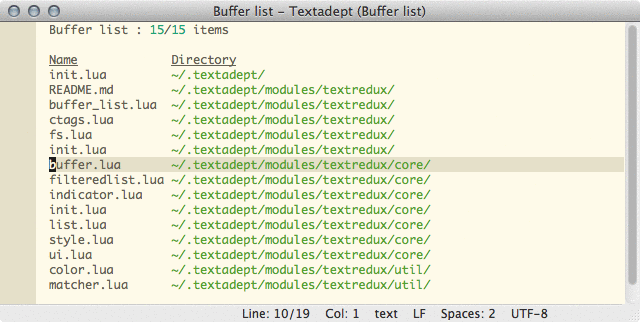

Textredux
Textredux is a module for the Textadept editor that offers text-based interfaces for core Textadept functionality.
Features
- A text-based file browser. Completely keyboard driven, with powerful search and seamless switching between traditional and snapopen (recursive) listings.
- A text-based replacement for the buffer list, also providing an easy way to close buffers and directories.
- A simple function call that automatically integrates all Textredux functionality in the Textadept editor. No need to configure anything further unless you want to – once you’ve loaded this you will be using Textredux. In addition to integrating the above modules, it will hook into Textadept and inject text based interfaces whereever it can (e.g. file open or theme selection).
Installation
The Textredux module itself can be downloaded from the releases page or by getting the latest version on master as a zip file.
To install the module, just unpack the module into the
~/.textadept/modules/textredux
directory. Alternatively you can clone Textredux into it:
cd ~/.textadept/modules git clone https://github.com/rgieseke/textredux.git
Usage
Having installed the module, there are two ways you can use it. Note that due to
Textredux re-using colors defined in your theme file, loading Textredux should happen
after a custom theme is set using ui.set_theme in your init.lua.
1) Cherrypick the functionality you want from the different modules by assigning
key bindings to the desired functions. As an example, if you would like to use
the text based file browser and normally open files using Ctrl-O, then the
following code in your init.lua would do the trick:
textredux = require 'textredux' keys.co = textredux.fs.open_file
2) If you can’t get enough of text based interfaces and the joy they provide,
then the Textredux hijack function is for you. Simple place this in your
init.lua:
require('textredux').hijack()
As the name suggest, Textredux has now hijacked your environment. All your regular key bindings should now use Textredux where applicable. Clicking the menu will still open the standard GUI dialogs.
Regardless of the approach chosen, the module documentation contains more in-depth documentation for the various modules, including customization tips.
Also, make sure to take a brief look at the screen shots for some quick tips on using Textredux.
Code
Textredux is released under the MIT license (see the LICENSE file in the source for the full details). The source code is available from GitHub. It was written by Nils Nordman and is now maintained by Robert Gieseke.
Contribute
Any feedback, be it patches, feature request or bug reports is most welcome.
If you want to provide patches, the preferred way of doing so would be as a pull request via GitHub, or as a pull request from some other Git server. Should that not be an option patches are gladly accepted through other means as well.
If you have any bug reports or feature requests, please submit them to the Github issue tracker or send an email to Textadept’s mailing list.
Changelog
1.2 (2020-03-09)
- Release to be compatible with Textadept 10
1.1 (2016-02-25)
- Don't hijack
save_asdialog - Allow drive selection on Windows
- Bug fixes, styling improvements
1.0.3 (2014-09-08)
- Requires a nightly build with fixes for
spawnon OS X and the terminal version - Fix console window popup on Windows for Ctags list (Thanks to Feng Li)
- Add example file to show output of
git ls-files
1.0.2 (2014-08-15)
- Fix bug caused by loading
lfsexplicitly after Textadept switched tolfsv1.6.2
1.0.1 (2014-06-27)
- Fix styling bugs
- Add note on updating styles
1.0.0 (2014-06-24)
- Requires Textadept 7.4 or later
- Hijack is now a function, no longer a module
- Waiting for
events.INITIALIZEDis no longer necessary when requiring Textredux - Keys use Textadept's
keys.MODEunder the hood - Removed support for on_keypress events
- Add support for
on_char_addedevents, seelist.luafor an example - Removed (flaky) support for modifiers on key presses and mouse clicks
- Removed reduxbuffer.newline function
- Hide Textadept's line numbers in Textredux buffers
- All Textredux buffers can be closed with
Escby default - Indicators and styles are now set using an
applyfunction bound to each table - The Ctags list colorises the kind of symbol (class, function, …)
- The current search is kept when toggling between snapopen and directory view
- In lists scrolling is limited to the selectable items
- The search in lists can be reset using
Ctrl/Alt/Meta-Backspace
0.11 (2014-03-04)
- Workaround for bug on Windows
0.10 (2013-10-29)
- New layout and updates for the documentation
- Renamed
core.guitocore.ui - Fix using default filtered list when not hi-jacked
- Fix bug when opening buffers in a new view
- Fix indicator example
0.9 (2013-10-01)
- Update for API changes until Textadept 7.0 beta 4
0.8 (2013-07-11)
- Update for module name change to
file_typesin Textadept 7.0 beta
0.7 (2013-07-02)
- Compatibility with Textadept 7.0 alpha 2
- Better workaround for item selection in Curses version (Thanks to Chris Emerson)
0.6 (2013-06-08)
- Compatibility with Textadept 6.6 and 7.0 alpha
- Added ctags symbol filtered list search
- Removed workaround for Curses version
0.5 (2013-05-02)
- Updates for API changes in Textadept 6.5 and 6.6 beta.
0.4 (2013-03-05)
- Integrate TextUI module back into Textredux as the
coresubmodule. - Update to snapopen API change in Textadept 6.2.
0.3 (2012-11-28)
- Updates for API changes until Textadept 6.
- Don’t hijack menu entries, use the default widgets when clicking the menu.
0.2 (2012-03-08)
- Make ctrl+enter open entries in another view (buffer list / file browser)
- Make buffer list keys configurable
- Handle buffers with nil directories in the buffer list
- TextUI:
- Added support for indicators
- Improved auto-loading of not-shown list items
- Added highlighting of list matches
- Added mouse support for buffer hotspots
- Font names are now included for default styles
- List selection callbacks now receive modifiers as well
0.1 (2012-01-20)
First public release.